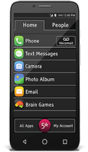
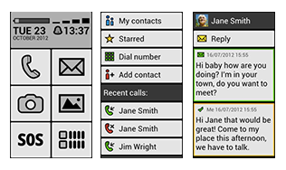

PROJECT 2: COMPARATIVE RESEARCH
Concept Overview:
One of the ideas I have been considering is creating a plug-in that presents device interfaces and web browsers in a guided, more simplified, straight-forward way for elder adults in particular. This extension would essentially act as a mediator,
and allow the target audience to accomplish the same tasks as everyone else in a way that’s more intuitive and accessible for them.

I. Jitterbug Smart smartphone
The interface for Jitterbug Smart, a smartphone especially geared toward seniors, possesses similar intentions to my own concept. It supposedly includes large icons and text, a single list menu, and essentially everything else that is included
in other smartphones. It even features a large button that quickly sends for help in the event of emergencies. However, the design of the interface does not seem that far off from the earliest layouts of smartphones, and thus, appears to be
quite outdated (at least based on the one photo that I encountered of it). Bearing this in mind, I’m not sure how much different it is to a typical smartphone and whether its benefits actually outweigh its costs. If its interface is similar
to those of smartphones from years ago, is it actually resolving an issue? Another drawback is the fact that this system is embedded into this particular device, and therefore, limits the audience’s selection. Considering these flaws led me
to the realization that many apps, websites, technology, etc. geared toward the elder community tend to disregard aesthetics and skimp on user experience. Just because a user is older, doesn’t mean they don’t deserve a thoughtful, engaging,
and up-to-date user experience. This is another diversity issue I’d like to address in my concept.
Jitterbug Smart. (n.d.). Retrieved January 25, 2018, from https://www.greatcall.com/phones/jitterbug-smart smartphone-for-seniors

II. BIG Launcher app
BIG Launcher aligns even closer to my concept, in that it is an application that turns the appearance and performance of a smartphone into a more simplistic and accessible interface. It is similar because it can be implemented into a range of
devices rather than being embedded into a single device, as with the Jitterbug Smart. Although, it is only available for Android phones. While the design of it is slightly better than the Jitterbug Smart, it still appears to be rather outdated
and seems like it could be a design seen on a toy phone. Even so, one interesting aspect about it is the fact that it is targeted toward not only elderly adults, but also children and those with vision impairment. That being said, its functions
possess the ability to be configured in order to accommodate each user’s personal needs. This flexibility is something that I would like to incorporate into my own design. I also like the use of large, easy-to-recognize icons on the home screen.
I think that despite the flat overall design, the BIG Launcher app does an effective job of eliminating unnecessary information. Another aspect that I am pleased with is how specific each menu item is. Incorporating a specific option that says
“Add contact” is so much easier to grasp than having to go through several steps in order to arrive at that function.
BIG Launcher for Android. (n.d.). Retrieved January 25, 2018, from http://biglauncher.com/